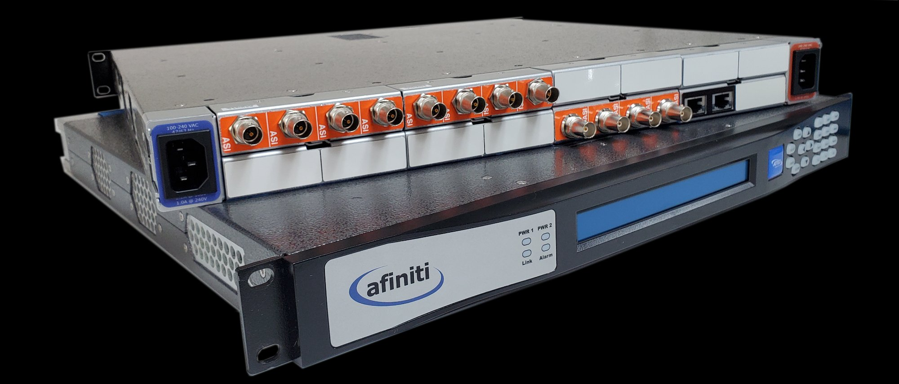
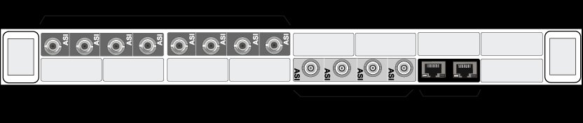
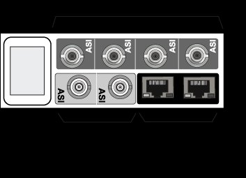
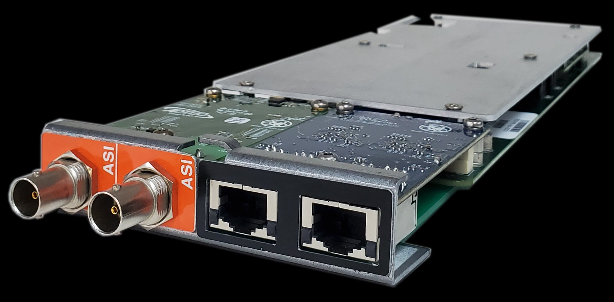
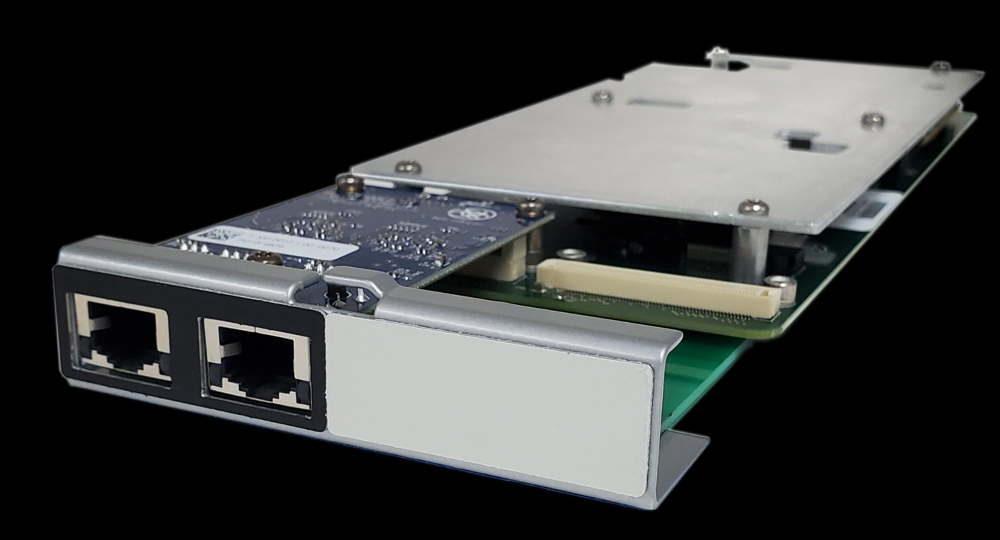

Multiplexer / Transport Carriers



Ideal for large-scale deployment, this traditional multiplexer configuration supports the multiplexing and de-multiplexing of ASI and IP transport streams for distribution. With an easy-to-use bouquet management interface and re-multiplexing capabilities.

For smaller operations, the AFN-250 frame model offers a smaller, more economical solution. Perfect for on-the-go applications and can be mounted in a 1 RU space with rackmount hardware.

For turn-around specific applications, the AFN-250 model is ideal. In turn-around mode, the stream is left intact and passed transparently from input to output or reconfigured for TS format conversion. Encrypted transmission via SRT is supported.

2 GigE Ports (Management and TSOIP) + 2 Standard BNC Inputs

2 GigE Ports (Management and TSOIP)
MPEG 2 RTP v2 (1-185Mbps), UDP (1-185Mbps), SRT (1-60Mbps)
Connection: GigE (100/1000BaseT), 2x RJ45
MPEG 2 RTP v2 (1-185Mbps), UDP (1-185Mbps), SRT (1-60Mbps)
Connection: GigE (100/1000BaseT), 2x RJ45
EN500083-9, DVB-ASI 185Mbps (SPTS and MPTS), 2x standard BNC (75 Ohm)
PSI: PAT / CAT / PMT
DVB SI: SDT / NIT / EIT / TDT/TOT
ATSC A65B: MGT (TVCT) / STT / RRT / EIT 0-3